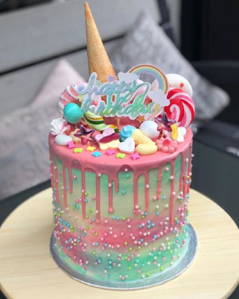

Verjaardagstaart recept

bron: HHB
Nodig
- 60 g boter
- 1 pak Dr. Oetker Kwarktaart Naturel
- 400 ml water
- 500 g magere kwark
- Dr. Oetker Kleurstoffen
- 1 flesje Dr. Oetker Unicorn Mix
Hoe maak ik een unicorn regenboog kwarktaart?
Voor
Stap 1
Leg het bijgesloten velletje bakpapier over de springvormbodem. Plaats de rand hierop en sluit de springvorm.
Bodem maken
Stap 2
60 g boter
1 pak Dr. Oetker Kwarktaart Naturel
Smelt 60 gram boter in een pannetje. Neem het pannetje van het vuur en roer de inhoud van het zakje kruimelbodemmix door de gesmolten boter.
Stap 3
Bedek de bodem van de springvorm gelijkmatig met de massa en druk dit stevig aan met de bolle kant van een lepel. Zet de springvorm in de koelkast.
Kleur taart maken
Stap 4
Tip
400 ml water
500 g magere kwark
250 ml slagroom
Doe het water (op kamertemperatuur 10-20 graden), de kwark en de slagroom in een kom en meng dit met een mixer met garden op de laagste stand door elkaar
Koude slagroom en kwark
Gebruik voor het beste resultaat de kwark en slagroom direct vanuit de koelkast.
Stap 5
Voeg de kwarkttaartmix toe en meng het mengsel met de mixer op de laagste stand in 1 minuut tot een glad mengsel. Klop het daarna op de hoogste stand in 2,5 minuut tot een luchtige massa.
Stap 6
Tip
Dr. Oetker Kleurstoffen
Verdeel het kwarktaartmengsel over 5 verschillende schaaltjes. Kleur de inhoud van een schaaltje, blauw, groen (1 deel blauw en 5 delen geel), geel, oranje (1 deel rood en 1 deel geel) en roze.
Eerlijk verdelen
Weeg van te voren je mengkom. Weeg na het bereiden van taartmix je mengkom met het taartmengsel. Haal van het totaal gewicht het gewicht van de kom. Deel het overgebleven gewicht door 5 en verdeel dit over de schaaltjes. Zo krijg je een mooie gelijkmatige regenboogkwarktaart.
Stap 7
Haal de springvorm uit de koelkast en verdeel het blauwe kwarktaart mengsel over de bodem en zet de springvorm ongeveer 10 minuten in de koelkast.
Stap 8
Verdeel na 10 minuten het groene mengsel over de blauwe laag en strijk het voorzichtig uit met een lepel. Zet het weer 10 minuten in de koelkast. Ga zo verder met het gele, oranje en het roze taartmengsel. Tussen de oranje en de roze laag is 5 minuten wachten genoeg.
Stap 9
Laat na de roze laag de unicorn regenboog kwarktaart minimaal 2 uur in koelkast opstijven.